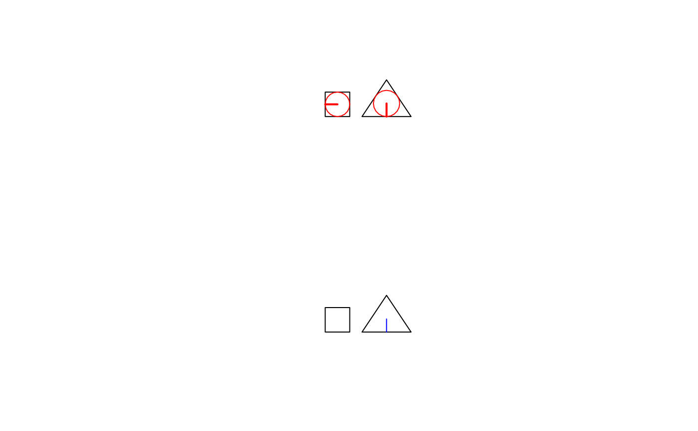

topo-unary-gMaximumInscribedCircle.Rd.
gMaximumInscribedCircle(spgeom, byid=FALSE, id = NULL, tol=.Machine$double.eps^(1/2),
checkValidity=NULL)sp object as defined in package sp
Logical determining if the function should be applied across subgeometries (TRUE) or the entire object (FALSE)
Character vector defining id labels for the resulting geometries, if unspecified returned geometries will be labeled based on their parent geometries' labels.
Numerical tolerance value
default FALSE; error meesages from GEOS do not say clearly which object fails if a topology exception is encountered. If this argument is TRUE, gIsValid is run on each in turn in an environment in which object names are available. If objects are invalid, this is reported and those affected are named
.
if (version_GEOS0() >= "3.9.0") {
x = readWKT(paste("GEOMETRYCOLLECTION(POLYGON((0 0,10 0,10 10,0 10,0 0)),",
"POLYGON((15 0,25 15,35 0,15 0)))"))
# Maximum inscribed circles of both the square and circle independently
c1 = gMaximumInscribedCircle(x, byid=TRUE)
c1_sp <- as(c1, "SpatialPoints") # coercion of straight line segments to points
c1_sp1 <- NULL
if ((length(c1_sp) %% 2) == 0) c1_sp1 <- c1_sp[seq(1, length(c1_sp), 2)]
if (!is.null(c1_sp1)) c1_circ <- gBuffer(c1_sp1, byid=TRUE,
width=gLength(c1, byid=TRUE))
# Maximum inscribed circle of square and circle together, needs gUnaryUnion(),
# inscribes circle in the component permitting the largest circle
c2 = gMaximumInscribedCircle(gUnaryUnion(x))
opar <- par(mfrow=c(2,1))
plot(x)
plot(c1, col='red', add=TRUE, lwd=2)
if (!is.null(c1_sp1)) plot(c1_circ, border="red", add=TRUE)
plot(x)
plot(c2, col='blue', add=TRUE)
par(opar)
}
#> Warning: GEOS support is provided by the sf and terra packages among others
